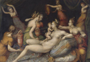

Eros/Cupid
Often connected to Aphrodite in myth is her son, in Greek known as Eros and in Latin Cupid. (See image 1) Eros as the son of Aphrodite should not be confused with the primordial deity of Hesiod. Eros as the son of Aphrodite is not treated in early Greek literature, such as in Homer or Hesiod, but becomes a regular figure in Classical and then especially Hellenistic times (fourth and third centuries B.C.E. – when he developed the particular playful elements of a petulant child, most familiar from his presentation in Latin literature).
{kind=link}
In the Symposium of the fourth-century B.C.E. philosopher Plato, Socrates argues that Eros is not a god, but that his nature is somewhere between god and mortal, good and bad, beautiful and ugly. He is imagined as a spiritual being who facilitates communication between men and gods. According to Plato, Eros is the son not of Aphrodite but of Resourcefulness and Poverty; when Resourcefulness gets drunk at a party, Poverty takes advantage of him and gives birth to his son Eros. This all happens on the day of Aphrodite’s birth, and so Eros is said to become the attendant of Aphrodite. He is, therefore, poor like his mother, but full of cleverness and scheming like his father. Love and lovers ultimately are searching for beauty in happiness and divine harmony. There is, for Socrates (Plato) a progression of love: it begins with physical love, moves to a broader understanding of beauty, and eventually seeks eternal spiritual, or philosophical beauty. Beauty in an individual becomes connected to universal and eternal beauty. Ultimately beauty of the soul is considered more important than beauty of the body.
But within Greek and Roman literature, Eros and then later Cupid is far better known as the son of Aphrodite who instils love in mortals and gods by shooting them with his arrows. As mentioned above, the Roman concept of Cupid is a particularly mischievous child connected primarily to romantic love. One of the most powerful myths concerning Cupid is that of his relationship with Psyche, prominently recounted by the Roman poet Apuleius (2nd century C.E.). It is a complex myth and worthy of summary here: Psyche (soul) is said in the myth to be the youngest of three royal daughters. She is extremely beautiful, such that she is compared directly to Venus. This outraged Venus, who has Cupid make Psyche fall in love with a terrible man. However, Venus’ plan backfires as Cupid himself in fact falls in love with Psyche. Because of this love, Psyche does not find a husband and her father, thinking something divine is affecting his daughter’s marriage, consults the oracle of Apollo. The oracle proclaims that Psyche should be dressed as a corpse and left atop a mountain to be the wife of a serpent (a sacred marriage with a god). Instead of her marriage to a serpent, she is carried from the mountain by the winds and descends to a valley, where she lives in a palace. Here she is visited each night by a secret lover. Her sisters search for her, but she has been warned by her lover not to respond to them. He finally agrees that she may see her sisters, as long as she does not try to discover his identity. Should she do so, she would lose him and the riches of her new life. She was also pregnant and her ignorance of her lover also ensured that her child would be divine.
The sisters became jealous of Psyche and convince her that she is in fact sleeping with a serpent and helped her plan to hide a knife and lamp to attack her lover within the night and see his identity. She sees Cupid, her secret lover, by the light of the lamp – but she pricks her finger on one of his arrows and, overcome with passion, she drops some oil from the lamp upon him. Cupid awakes and flies away. Psyche then in her grief tries to commit suicide in a river, but the river saves her. Psyche is advised by Pan to win back Cupid’s love. She punishes her sisters by telling them that Cupid would be their husband if they should go to him; they die by jumping off mountains, hoping to be carried to Cupid by the winds. Venus, meanwhile, is furious at Psyche for having burned her son with oil. She captures her and makes her undertake a number of impossible tasks: 1) sort out mixed grains by nightfall (an ant helps her), 2) get wool from a flock of dangerous sheep (a reed helps her), 3) go to a tall mountain and bring back water from a river that went to the underworld (a dragon guards this stream, but an eagle of Jupiter gets the water for her), 4) to take a box to Persephone in the underworld, in which she was to bring back a fragment of the goddess’s beauty. Psyche tries to kill herself before this task by jumping off a high tower, but the tower helps her. It explains how she should enter the underworld (with food to calm Cerberus and money for the ferryman Charon) and warns her not to look in the box. But she cannot not resist looking into the box which contains a deathlike sleep, not beauty, and she is enveloped by death. Finally, Cupid comes after her to save her, putting death back in the box. Jupiter accepts their marriage and Psyche is made a goddess.
This complex myth admits many interpretations. I would note in particular in the context of this Essential Element that we once again see love, here personified as Cupid, involved in reproduction and resurrection from the dead (Psyche’s descent into the underworld and Cupid’s rescue) which can be connected to a myth such as Adonis’ descent into the underworld and his encounter with Persephone (as above). Cupid’s love after with Psyche, the personified soul, also recalls Plato and explores the central role of love in our lives.
In Greek and Roman literature, Aphrodite/Venus and her son Eros/Cupid are deities who profoundly impact both gods and mortals and are often at the centre of mythology’s exploration of mortality and immortality. Both are frequently presented in light-hearted and amusing ways, but at the very centre of such entertaining myths lie very serious questions. This is well displayed in the Homeric Hymn to Aphrodite: at the outset of the myth there is a light-heartedness in the seduction of Anchises by Aphrodite (note for example the rather comical image of Anchises hiding behind his blanket after he discovers that he has slept with a goddess, having previously claimed that he would bravely face death at the hands of Apollo should he only be allowed to sleep with the beautiful woman before him!). As the poem progresses, however, the poet strikes a serious tone: Tithonus, the lover of Dawn to whom Zeus grants immortality but not everlasting youth, withers eternally in the bedroom of his immortal lover, an example of how mortals and gods are not compatible.